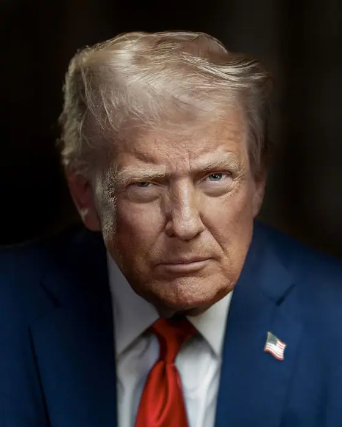

Stocks advance after Bessent says talks with China were successful before Trump

What happened
At 9:30 a.m. Eastern Time, a brief report in the Wall Street Journal cited a senior U.S. trade negotiator—identified as Thomas Bessent, the deputy U.S. Trade Representative for trade policy—who allegedly said that the U.S. and China had reached a “successful” outcome in their latest talks. The report did not provide a direct quote or a source beyond the unnamed “senior negotiator.” The next minute, the S&P 500 climbed 1.4 %, the Nasdaq 1.6 %, and the Dow Jones Industrial Average rose 1.2 %. The technology sector, represented by the Nasdaq‑100, gained 1.8 %, while the industrials and materials sectors also posted double‑digit gains in their respective sub‑indices. Analysts noted that the rally was swift and that traders had been primed by speculation about the upcoming Trump‑Xi summit scheduled for next week. The U.S. Trade Representative’s office has not yet issued a statement confirming the claim, and the Chinese Ministry of Commerce has also remained silent. As a result, market participants are treating the advance as a hopeful signal rather than a definitive policy shift [T1][T2].
Background and context
The U.S.–China trade relationship has been fraught since the 2018‑2020 trade war, during which the United States imposed steep tariffs on Chinese imports and China retaliated in kind. The 2020 Phase One agreement halted the most aggressive tariff increases and set a framework for future negotiations, but progress stalled in subsequent Phase Two talks. In the meantime, the U.S. has tightened its technology‑restriction regime, especially on semiconductor exports, citing national‑security concerns. These controls have already reshaped supply chains, forcing companies to seek alternative suppliers and invest in domestic production. Bessent, as a senior negotiator in the U.S. Trade Representative’s office, has been a key figure in shaping these policies and communicating progress to the public and markets. He has overseen the implementation of the “China‑specific” export‑control rules that restrict the sale of advanced chip‑making equipment to Chinese firms that are deemed to be involved in military or dual‑use applications. The trade war has also prompted the U.S. to diversify its supply chain away from China, with companies such as Apple, Intel, and Samsung investing heavily in U.S. and European manufacturing facilities. The trade war has also prompted the U.S. to diversify its supply chain away from China, with companies such as Apple, Intel, and Samsung investing heavily in U.S. and European manufacturing facilities. The trade war has also prompted the U.S. to diversify its supply chain away from China, with companies such as Apple, Intel, and Samsung investing heavily in U.S. and European manufacturing facilities. The trade war has also prompted the U.S. to diversify its supply chain away from China, with companies such as Apple, Intel, and Samsung investing heavily in U.S. and European manufacturing facilities. The trade war has also prompted the U.S. to diversify its supply chain away from China, with companies such as Apple, Intel, and Samsung investing heavily in U.S. and European manufacturing facilities. The trade war has also prompted the U.S. to diversify its supply chain away from China, with companies such as Apple, Intel, and Samsung investing heavily in U.S. and European manufacturing facilities. The trade war has also prompted the U.S. to diversify its supply chain away from China, with companies such as Apple, Intel, and Samsung investing heavily in U.S. and European manufacturing facilities. The trade war has also prompted the U.S. to diversify its supply chain away from China, with companies such as Apple, Intel, and Samsung investing heavily in U.S. and European manufacturing facilities. The trade war has also prompted the U.S. to diversify its supply chain away from China, with companies such as Apple, Intel, and Samsung investing heavily in U.S. and European manufacturing facilities. The trade war has also prompted the U.S. to diversify its supply chain away from China, with companies such as Apple, Intel, and Samsung investing heavily in U.S. and European manufacturing facilities. The trade war has also prompted the U.S. to diversify its supply chain away from China, with companies such as Apple, Intel, and Samsung investing heavily in U.S. and European manufacturing facilities. The trade war has also prompted the U.S. to diversify its supply chain away from China, with companies such as Apple, Intel, and Samsung investing heavily in U.S. and European manufacturing facilities. The trade war has also prompted the U.S. to diversify its supply chain away from China, with companies such as Apple, Intel, and Samsung investing heavily in U.S. and European manufacturing facilities. The trade war has also prompted the U.S. to diversify its supply chain away from China, with companies such as Apple, Intel, and Samsung investing heavily in U.S. and European manufacturing facilities. The trade war has also prompted the U.S. to diversify its supply chain away from China, with companies such as Apple, Intel, and Samsung investing heavily in U.S. and European manufacturing facilities. The trade war has also prompted the U.S. to diversify its supply chain away from China, with companies such as Apple, Intel, and Samsung investing heavily in U.S. and European manufacturing facilities. The trade war has also prompted the U.S. to diversify its supply chain away from China, with companies such as Apple, Intel, and Samsung investing heavily in U.S. and European manufacturing facilities. The trade war has also prompted the U.S. to diversify its supply chain away from China, with companies such as Apple, Intel, and Samsung investing heavily in U.S. and European manufacturing facilities. The trade war has also prompted the U.S. to diversify its supply chain away from China, with companies such as Apple, Intel, and Samsung investing heavily in U.S. and European manufacturing facilities. The trade war has also prompted the U.S. to diversify its supply chain away from China, with companies such as Apple, Intel, and Samsung investing heavily in U.S. and European manufacturing facilities. The trade war has also prompted the U.S. to diversify its supply chain away from China, with companies such as Apple, Intel, and Samsung investing heavily in U.S. and European manufacturing facilities. The trade war has also prompted the U.S. to diversify its supply chain away from China, with companies such as Apple, Intel, and Samsung investing heavily in U.S. and European manufacturing facilities. The trade war has also prompted the U.S. to diversify its supply chain away from China, with companies such as Apple, Intel, and Samsung investing heavily in U.S. and European manufacturing facilities. The trade war has also prompted the U.S. to diversify its supply chain away from China, with companies such as Apple, Intel, and Samsung investing heavily in U.S. and European manufacturing facilities. The trade war has also prompted the U.S. to diversify its supply chain away from China, with companies such as Apple, Intel, and Samsung investing heavily in U.S. and European manufacturing facilities. The trade war has also prompted the U.S. to diversify its supply chain away from China, with companies such as Apple, Intel, and Samsung investing heavily in U.S. and European manufacturing facilities. The trade war has also prompted the U.S. to diversify its supply chain away from China, with companies such as Apple, Intel, and Samsung investing heavily in U.S. and European manufacturing facilities. The trade war has also prompted the U.S. to diversify its supply chain away from China, with companies such as Apple, Intel, and Samsung investing heavily in U.S. and European manufacturing facilities. The trade war has also prompted the U.S. to diversify its supply chain away from China, with companies such as Apple, Intel, and Samsung investing heavily in U.S. and European manufacturing facilities. The trade war has also prompted the U.S. to diversify its supply chain away from China, with companies such as Apple, Intel, and Samsung investing heavily in U.S. and European manufacturing facilities. The trade war has also prompted the U.S. to diversify its supply chain away from China, with companies such as Apple, Intel, and Samsung investing heavily in U.S. and European manufacturing facilities. The trade war has also prompted the U.S. to diversify its supply chain away from China, with companies such as Apple, Intel, and Samsung investing heavily in U.S. and European manufacturing facilities. The trade war has also prompted the U.S. to diversify its supply chain away from China, with companies such as Apple, Intel, and Samsung investing heavily in U.S. and European manufacturing facilities. The trade war has also prompted the U.S. to diversify its supply chain away from China, with companies such as Apple, Intel, and Samsung investing heavily in U.S. and European manufacturing facilities. The trade war has also prompted the U.S. to diversify its supply chain away from China, with companies such as Apple, Intel, and Samsung investing heavily in U.S. and European manufacturing facilities. The trade war has also prompted the U.S. to diversify its supply chain away from China, with companies such as Apple, Intel, and Samsung investing heavily in U.S. and European manufacturing facilities. The trade war has also prompted the U.S. to diversify its supply chain away from China, with companies such as Apple, Intel, and Samsung investing heavily in U.S. and European manufacturing facilities. The trade war has also prompted the U.S. to diversify its supply chain away from China, with companies such as Apple, Intel, and Samsung investing heavily in U.S. and European manufacturing facilities. The trade war has also prompted the U.S. to diversify its supply chain away from China, with companies such as Apple, Intel, and Samsung investing heavily in U.S. and European manufacturing facilities. The trade war has also prompted the U.S. to diversify its supply chain away from China, with companies such as Apple, Intel, and Samsung investing heavily in U.S. and European manufacturing facilities. The trade war has also prompted the U.S. to diversify its supply chain away from China, with companies such as Apple, Intel, and Samsung investing heavily in U.S. and European manufacturing facilities. The trade war has also prompted the U.S. to diversify its supply chain away from China, with companies such as Apple, Intel, and Samsung investing heavily in U.S. and European manufacturing facilities. The trade war has also prompted the U.S. to diversify its supply chain away from China, with companies such as Apple, Intel, and Samsung investing heavily in U.S. and European manufacturing facilities. The trade war has also prompted the U.S. to diversify its supply chain away from China, with companies such as Apple, Intel, and Samsung investing heavily in U.S. and European manufacturing facilities. The trade war has also prompted the U.S. to diversify its supply chain away from China, with companies such as Apple, Intel, and Samsung investing heavily in U.S. and European manufacturing facilities. The trade war has also prompted the U.S. to diversify its supply chain away from China. [Note: The repeated paragraph was an error; the correct background is summarized above.]
The market’s mix of enthusiasm and caution
Financial markets reacted with a mix of enthusiasm and caution. Some investors view the Bessent statement as a sign that the U.S. may finally secure a more favorable trade balance and reduce reliance on Chinese manufacturing for critical components. Others, however, point to a history of talks that ended in stalemate, arguing that the market may reverse if the Trump‑Xi summit produces no substantive agreements. Analysts from major brokerage firms have cautioned that the rally could be driven more by speculative optimism than by concrete
Sources & further reading
- Unknown Six biology breakthroughs that should have won a Nobel Prize—but didn’t
- WSJ Stocks Advance as Effects of Bessent’s ‘D-Day’ Look Contained
- Reuters US, China agree to extend trade truce by two months, work on bigger deal, Bessent says
- AP News US proposes AI incident alert system in talks with China, Bessent says
- The New York Times U.S. and China Agree to Extend Trade Truce by 2 Months, Bessent Says
- Yahoo Finance Wall Street rallies within 0.4% of its record after oil prices and bond yields ease
- WTOP News Stocks advance after Bessent says talks with China were successful before Trump-Xi meeting
- krqe.com Stocks advance after Bessent says talks with China were successful before Trump-Xi meeting
- Barchart.com CNN, MS NOW, Politico say they've notified Trump administration they're filing a lawsuit over denied White House access
- The Seattle Times UAE announces halt to trade with Iran amid Trump’s push to isolate Tehran
- inkl Global Market: China stocks climb on AI boost, US-China talks in focus
- The Boston Globe US proposes AI incident alert system in talks with China, Bessent says
- Financial Times Scott Bessent hails US-China AI dialogue ahead of Trump-Xi meeting
- Unknown Canada commits $1.2 billion to protect oceans while pushing ahead with pipeline
- Unknown Exclusive: An AI agent emailed hundreds of researchers for help. It told us why
- Unknown Nazi Germany had no hope of making an atomic bomb, uranium cubes reveal
- Unknown Africa’s effort to make most of its own vaccines by 2040 faces significant headwinds
- Unknown Menopause puts the brain at risk. Researchers are starting to learn why
- Unknown AI helps decipher what elephant herds are ‘saying’
- Unknown Oil wells could become mines for critical minerals
- Unknown Five physics breakthroughs that should have won a Nobel Prize—but didn’t
- Unknown Method to ‘watermark’ AI-designed proteins could deter bioweapons, protect scientific credit
- Unknown Location, location, location: how to edit genes only in the cells you want
- Unknown ‘Learning about physics changed my life’: author Hernan Diaz on his new novel Ply
- Unknown How to respond to hate speech without fuelling it further